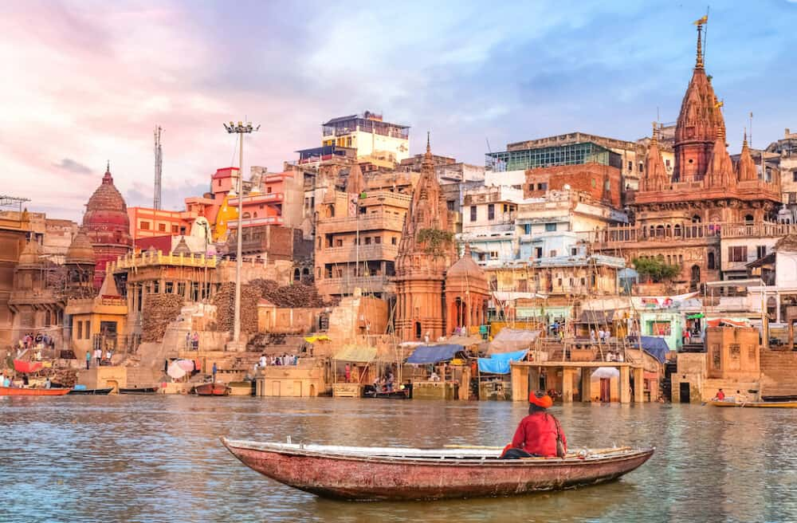

INDIA
South Asian nation with cities Delhi & Mumbai, the Taj Mahal mausoleum, temples & the Himalayas.
South Asian nation with cities Delhi & Mumbai, the Taj Mahal mausoleum, temples & the Himalayas.
OFFICIAL NAME: Republic of India, Bharat
FORM OF GOVERNMENT: Federal republic
CAPITAL: New Delhi
POPULATION: 1,296,834,042
OFFICIAL LANGUAGES: Hindi, English, 21 others
MONEY: Rupee
AREA: 1,269,345 square miles (3,287,590 square kilometers)


The Taj Mahal, is an Islamic ivory-white marble mausoleum on the right bank of the river Yamuna in the Indian city of Agra. It was commissioned in 1632 by the Mughal emperor Shah Jahan to house the tomb of his favourite wife, Mumtaz Mahal; it also houses the tomb of Shah Jahan himself. The tomb is the centrepiece of a 17-hectare complex, which includes a mosque and a guest house, and is set in formal gardens bounded on three sides by a crenellated wall. Construction of the mausoleum was essentially completed in 1643, but work continued on other phases of the project for another 10 years. The Taj Mahal complex is believed to have been completed in its entirety in 1653 at a cost estimated at the time to be around ₹32 million, which in 2020 would be approximately ₹70 billion. The construction project employed some 20,000 artisans under the guidance of a board of architects led by the court architect to the emperor, Ustad Ahmad Lahauri. Various types of symbolism have been employed in the Taj to reflect natural beauty and divinity

The Qutb Minar, also spelled Qutub Minar and Qutab Minar, is a minaret and "victory tower" that forms part of the Qutb complex, which lies at the site of Delhi’s oldest fortified city, Lal Kot, founded by the Tomar Rajputs. It is a UNESCO World Heritage Site in the Mehrauli area of South Delhi, India. It is one of the most visited tourist spots in the city, mostly built between 1199 and 1220. It can be compared to the 62-metre all-brick Minaret of Jam in Afghanistan, of c. 1190, which was constructed a decade or so before the probable start of the Delhi tower. The surfaces of both are elaborately decorated with inscriptions and geometric patterns. The Qutb Minar has a shaft that is fluted with "superb stalactite bracketing under the balconies" at the top of each stage. In general, minarets were slow to be used in India and are often detached from the main mosque where they exist.


Humayun's tomb is the tomb of the Mughal Emperor Humayun in Delhi, India. The tomb was commissioned by Humayun's chief consort, Empress Hamida Banu Begum, on patronage of her son Akbar, in 1558, and designed by Mirak Mirza Ghiyas and his son, Sayyid Muhammad, Persian architects chosen by her. It was the first garden-tomb on the Indian subcontinent, and is located in Nizamuddin East, Delhi, India, close to the Dina-panah Citadel, also known as Purana Qila, that Humayun found in 1533. It was also the first structure to use red sandstone at such a scale. The tomb was declared a UNESCO World Heritage Site in 1993, and since then has undergone extensive restoration work, which is complete. Besides the main tomb enclosure of Humayun, several smaller monuments dot the pathway leading up to it, from the main entrance in the West, including one that even pre-dates the main tomb itself, by twenty years; it is the tomb complex of Isa Khan Niyazi, an Afghan noble in Sher Shah Suri's court of the Suri dynasty, who fought against the Mughals, constructed in 1547 CE.

The Red Fort or Lal Qila is a historic fort in Old Delhi, Delhi in India that served as the main residence of the Mughal Emperors. Emperor Shah Jahan commissioned construction of the Red Fort on 12 May 1638, when he decided to shift his capital from Agra to Delhi. Originally red and white, its design is credited to architect Ustad Ahmad Lahori, who also constructed the Taj Mahal. The fort represents the peak in Mughal architecture under Shah Jahan, and combines Persianate palace architecture with Indian traditions. The fort was plundered of its artwork and jewels during Nadir Shah's invasion of the Mughal Empire in 1739. Most of the fort's marble structures were subsequently demolished by the British following the Indian Rebellion of 1857. The fort's defensive walls were largely undamaged, and the fortress was subsequently used as a garrison. On 15 August 1947, the first Prime Minister of India, Jawaharlal Nehru, raised the Indian flag above the Lahori Gate. Every year on India's Independence Day, the Prime Minister hoists the Indian tricolour flag at the fort's main gate and delivers a nationally broadcast speech from its ramparts